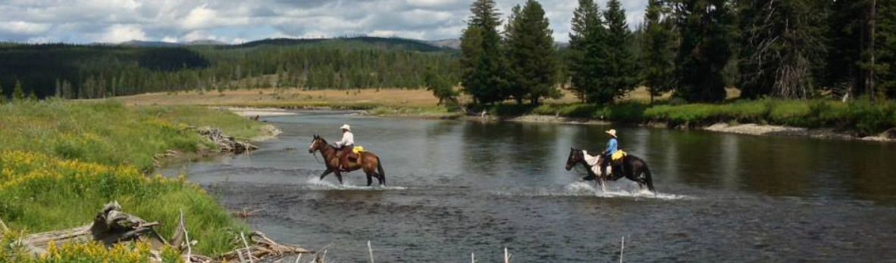

🏠 Our Big Sky VRBO
Address: 3 Swift Bear Rd, Big Sky, MT 59716
View VRBO Listing
This luxury VRBO offers mountain views, plenty of space, multiple bedrooms and bathrooms, and an ideal base for all our activities.


Location: Big Sky, Montana
Dates: July 6–11, 2025
July 6: DFW ➡ Bozeman (BZN), AA 952 @ 8:00 AM — Arrive 10:09 AM
July 11: Bozeman (BZN) ➡ DFW, AA 947 @ 3:58 PM — Arrive 8:00 PM
Seats: 18E/F, 19D/E/F
Address: 3 Swift Bear Rd, Big Sky, MT 59716
View VRBO Listing
This luxury VRBO offers mountain views, plenty of space, multiple bedrooms and bathrooms, and an ideal base for all our activities.
Béquet Confections: Award-winning, handcrafted caramels made in Bozeman using all-natural ingredients. Gluten-free, kosher, and nut-free. Flavors like Celtic Sea Salt and Salt-Chocolate are local favorites. Visit site
Montana Grizzly Encounter: A rescue sanctuary offering up-close views of grizzly bears in a safe, naturalistic environment. Perfect for families, with educational signage and photo ops. It’s a great ~45-minute stop on your way to or from Big Sky. Visit site
Gallatin County Pioneer Museum: Explore local history through pioneer-era exhibits, housed in the old county jail. Visit site
MacKenzie River Pizza Lodge: Cozy, family-style lodge with hearty pizzas and Montana-inspired ambiance. Visit site
Sweet Peaks Ice Cream: Handmade, locally sourced ice cream—a perfect post-travel treat. Visit site
Treeline Coffee Roasters: Mountain-born and women-owned—great coffee and pastries in a bright café. Visit site
Bozeman Hot Springs: Relax in 9–12 pools (indoors/outdoors, 59–106°F) with saunas and live music cues. Visit site
Bunkhouse Brewery (Four Corners): Casual evening spot with craft beers, peanuts, and live events like open-mic and trivia. Visit site
Gallatin River Ziplining
Time: 11:00 AM
Location: Montana Whitewater – Gallatin
63960 Gallatin Rd, Gallatin Gateway, MT, USA
Confirmed for Chris, Cole, Carli, and Chase. Sara is sitting this one out! This family-friendly zipline adventure takes place along the scenic Gallatin River, in an area famous for its appearance in A River Runs Through It. The tour includes tree platforms 55 feet high, two zips across the river, and sky bridges. The Super Zip option adds swinging wooden bridges and an optional cargo net climb. Max participant weight is 260 lbs.
More on Viator | Visit Montana Whitewater

VIP Private Yellowstone Tour: Visit Grand Prismatic Spring, Fountain Paint Pot, Firehole Lake Drive, and Firehole Canyon Drive. Includes gourmet picnic lunch, spotting scopes, binoculars, and take-home wildlife video. Entry fees, gratuities, and a personalized family-friendly guide experience are all included. View tour
Please take a look at this form and let me know what your Lunch order is:
Yellowstone Lunch Order Form

Gallatin River Fly Fishing – Half-Day Walk & Wade: 4-hour guided trip starting at 1:00 PM. Includes all gear and instruction on some of the most scenic stretches of the Gallatin River. Meet at the fly shop in Big Sky. Trip info
Date & Time: July 9 at 1:00 PM
Location: Gallatin River (meet at their fly shop in Big Sky)
This 4-hour guided walk-and-wade trip puts you on some of the most scenic water in Montana. Whether you’re brand new or an experienced angler, their low guide-to-client ratio makes for a personalized adventure. Expect instruction, local hatch knowledge, and a real taste of the Montana fly fishing lifestyle.
Cache Creek Outfitters – Horseback Riding: Offers full-day, half-day, and two-hour guided rides through the scenic beauty of Montana and Yellowstone’s northwest corner. Whether you're a first-time rider or an expert, they carefully match each guest to the right horse. As Ronald Reagan once said, “There’s nothing better for the soul of a man than the outside of a horse.” Visit site
